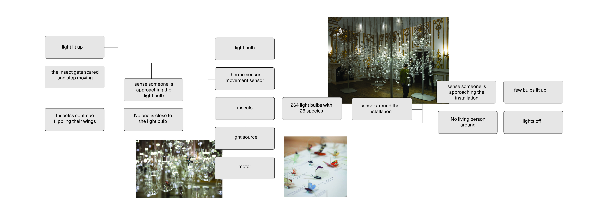
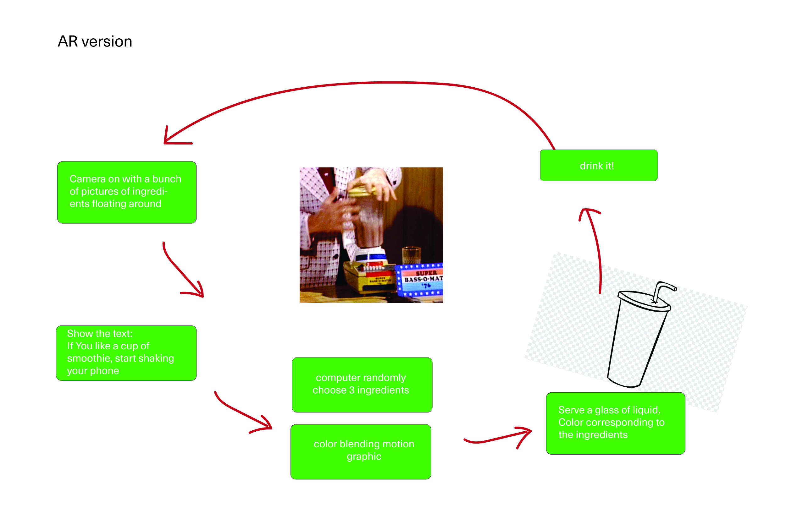

Week 5
3 Simulations
Mircrosoft Flight Simulator
Website link
Corona Villa

Alps
https://www.foundry.com/products/modo
https://openframeworks.cc
http://tracery.io/
https://www.fredperry.com/rafsimons-19/#/p=5&t=1&h=3
postconscio.us
https://studiodumbar.com/work/cumulus-park
It is really interesting that the writer bring up this point of open design alternatives are not here to replace the existing system rather than offering another possibility to it. Does design is defined as design when the intention is not trying to solve the problems? Moreover, what does it mean when an alternative or an open design offer an entirely possible and achievable solution, hence successfully replaced the existed system?
I wonder how the writer define aesthetics in his article. In my opinion, aesthetics does not necessarily indicate having a beautiful and polished facade, but rather an appearance that communicates meanings and functions which sometimes happen to be aesthetically pleasing. In addition, even though I personally do not prefer the work that exclusively focus on design aesthetics, I cannot deny the power of style and trends, as well as how people are so easily swayed by attractive design aesthetics. Not to mention the fact that the “ intentionally unrefined ugly style” gradually comes in fashion as the trend of recent years. Therefore, I wonder if we can ever work pass the emphasis on aesthetics and exhibit our concept experimentation without considering the aesthetics of it.
This quote really reflects what I have been contemplating recently. When a work of design is perfectly functional and beautiful, we often overlook the implication and the underlying context beyond its facade. Since we often confuse the good design with critical design, I think it is also important to draw the line between good design and critical design, but also where exactly should we draw the line. I also wonder what defines critical design? And can a design poses controversial even oppositional point of view be seen as critical design.
https://feeldforplay.com/
https://www.patatap.com/
https://youtu.be/S4C4zKv1oh4
Feeldforplay Diagram
Smoothie Maker Diagram
"The paragraph prompts me to think if the methodologies of hacking can also be applied to social design practices in order to dismantle the discriminatory convention and foster opportunities for reestablishment. By studying the nuances and the patterns behind the interface, we get to infiltrate the cracks in the facade. It also just reminds us the fact that hacking is not magic and it is conducted through a series of study and exploration.
It is poetic to think the gesture of hacking is the demolition of the artifacts rather than the human beings. The virtual destruction an be carried into the physical world and stifle the condition of the human subject. It is also an unconventional way of protest without physical violence. However, even though I understand the writer’s position, I wonder if they also consider the legitimacy of the hacking operations that hurts the most vulnerable demographic in the system.
Even though I have heard much about how the internet is no longer a neutral space since it is still largely controlled by a handful of corporations, I never came across the proposition of that the ethos of hackers has been gentrified. And maybe everything has been gentrified. Art has been gentrified, designed has been gentrified. Everything that was once innovative and swaggy will be gentrified as soon as it was exposed to the mass population. The essence of the movement gets diluted as the incentive was contorted. Perhaps, the only way to combat gentrification is through resiliently reinventing and evolving. We mourned over the loss and enter another cycle of conquest and resurrrection.
It is interesting to think that the degree of elaboration of the prototype should also be determined by the audience. I also wonder about the possibility that a low budget client could be offended by a highly embellished prototype. In addition, what if the audience of the prototype is different from the target audience of the finish product? Could it pose a problem to the final design?
I always thought we should only make one prototype for one project, so it never occurs to me that we can actually build multiple and simpler version of them to communicate different aspects of the final product. It could also be easier to troubleshoot when we dissect the project into multiple parts.
Since everyone has different expectations for what a prototype is, designers should prepare the audience for the purpose of the prototype. It could also ccause much misunderstanding if the audience is unaware the main purpose of the prototype. However, I also wonder what should designers do in a situation that the audience’s expectation does not align with theirs? Also, what if the audience is too bogged down by the raw user-interface? Does it negate the purpose of the prototype?
Very often the most valuable part of an experiment is not whether we successfully execute a design, rather the connection we build with other people by interacting with them and listening to their stories. The degree of involvement and enthusiasm from the community cannot be forced, hence it is already a good start for any projects that involves designing for/with a community.
I think a lot of times designers do not want to impose the experiments on their subject and rather wish the subjects respond to the experiment organically or without external forces. However, we often overestimate how much people are willing to participate when the design is not right in front of them, but it also raises the question of how we design to encourage people’s engagement. In addition, do we renounce our intention or do we keep it from our subjects? Are people willing to invest time and energy to participate and understand the design?
In the beginning of the chapter, the text also emphasized that the experiments adopts appropriate often low-tech means to simulate and test the experiences. I sometimes wonder why is it so hard to implement technology in community experiments. Is it because technology is too invasive? Or is it because the lack of infrastructure within the communities? Financial reasons could also be an issue, and within the community people’s literacy in certain technology definitely matters. However, if technology is the end goal of the experiment, how do we design appropriate means without technology to conduct the experiments? On the other hand, the experiment in Bijlmer shows that means of experiments does not have to elaborate. Ssimple gestures like presenting the slogans and interacting with the messages can do much in invoking people’s interest in participation.
It is still crazy to me to think that all the aspects of our life is shaped by some sort of codes. The electronic appliances that we cannot live without, receiving a package, texting another person are composed of bits of code written by some people from the other of the world. We are shaped by the software and hardware around us, and we shape the software and hardware around us. Not a single person could code the entire Macintosh computer from scratch. Every program is a collective effort of a handful of people, and anyone who participates contributes.
I have always assumed that programming is an act of building and debugging only happens when things don’t work. Based on my extremely short experience in programming, so far I have experienced far more frustration than fulfillment as I spent most of the time debugging incompetently. When I learn how to code through youtube tutorials, writing codes just seem so easy and natural to the people on the screen as if debugging is atypicality. The red exclamation icon at the bottom of my text editor perpetuate my anxiety as I am learning. However, knowing that “programming is the expectation that things don’t work” provides me some reassurance and makes me feel less demoralizing.
Before I took my first computer science class in college, I thought I would be able to learn one programming language and roll with it for the rest of my life. I did not know programming language can go out of date and be replaced by new ones. In a way, we are not only learning how to code in a specific language, rather, we are learning how to learn a programming language so we have the ability to adapt and mutate. But right now, I am still struggling to fully understand one language and be able to create with lines of codes.
There is something both eery and interesting about perceiving the machines with sensors as living creatures. We found no lack of evidence of how human beings anthropomorphize non organic matters in literature, design, art, commercial settings or whenever we construct narrative of things. It is quite poetic to describe machinery in such romantic and emotional language, however, it also manifests ho
I love how the writer describe motions and behaviors the vehicles in this writing. He observes them like how animals are presented on planet earth, is it feels like we are reading some docuseries of some machine/animals. It also just gives me an idea like what if we can make digital ecology documentary later.
It is a bit weird to think that a vehicle is stimulated by the smells, since at least to me sense of smell feels exclusive to living creatures with noses. Nevertheless, smell can be broken down into chemical composition just like how sounds can be broken down into sound waves or physics (please forgive my lack of knowledge and vocabulary this matter). I can’t help being fascinated by the sensor’s capability of processing abstract senses, feelings, and perceptions which seems so organic and unformulated. I also really like how the writer gives the vehicles some personality, so the machines are portrayed beyond simple living creatures as they have agency and preferences.